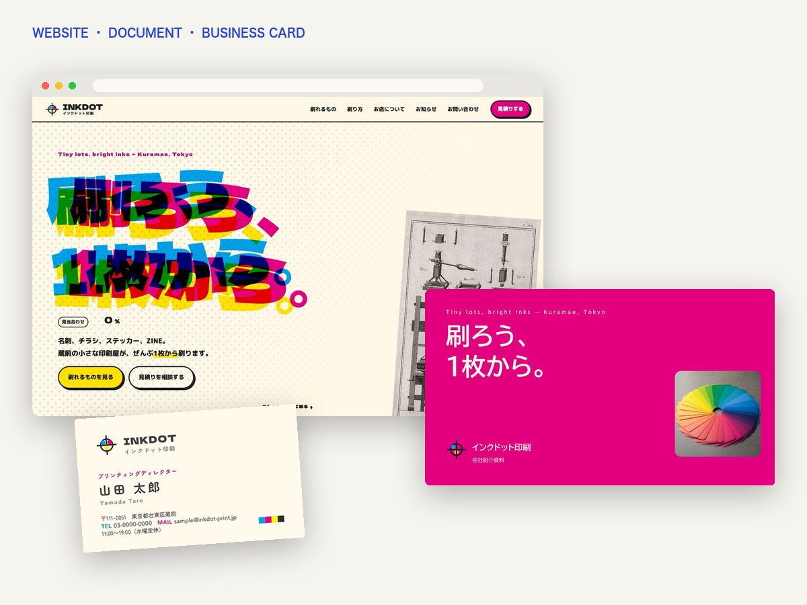
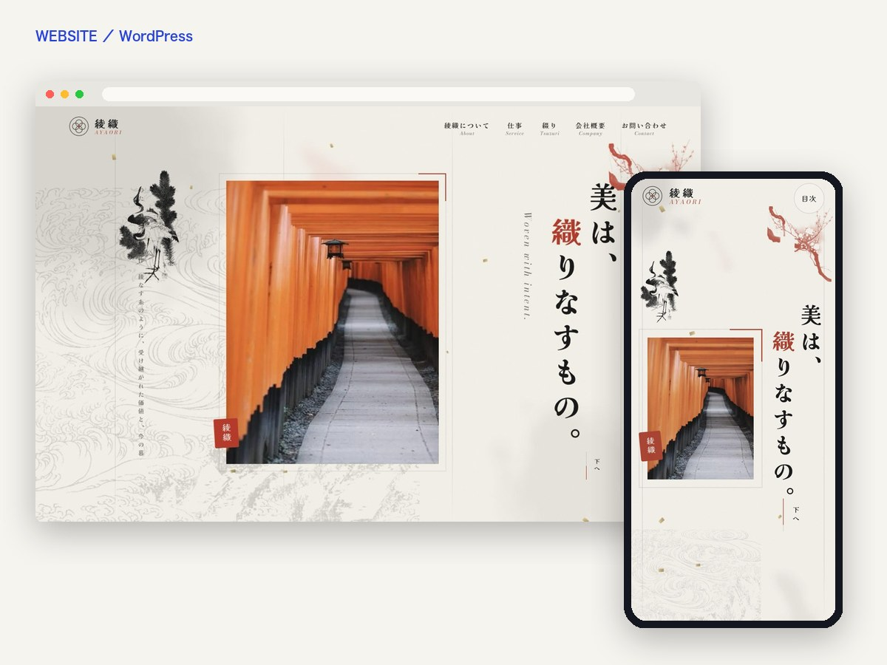
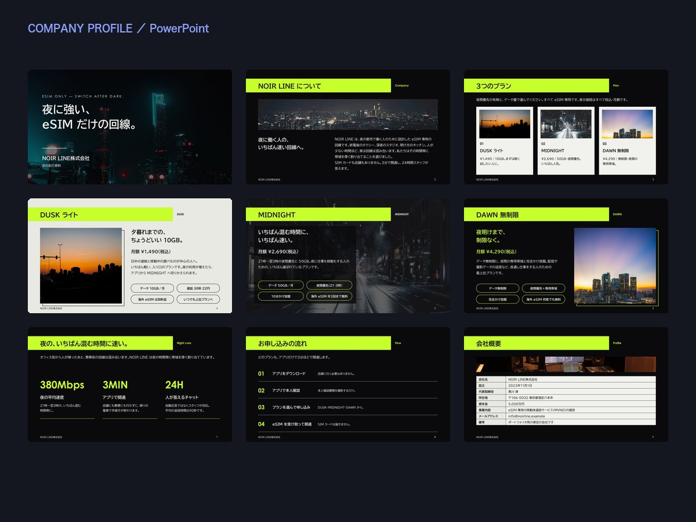
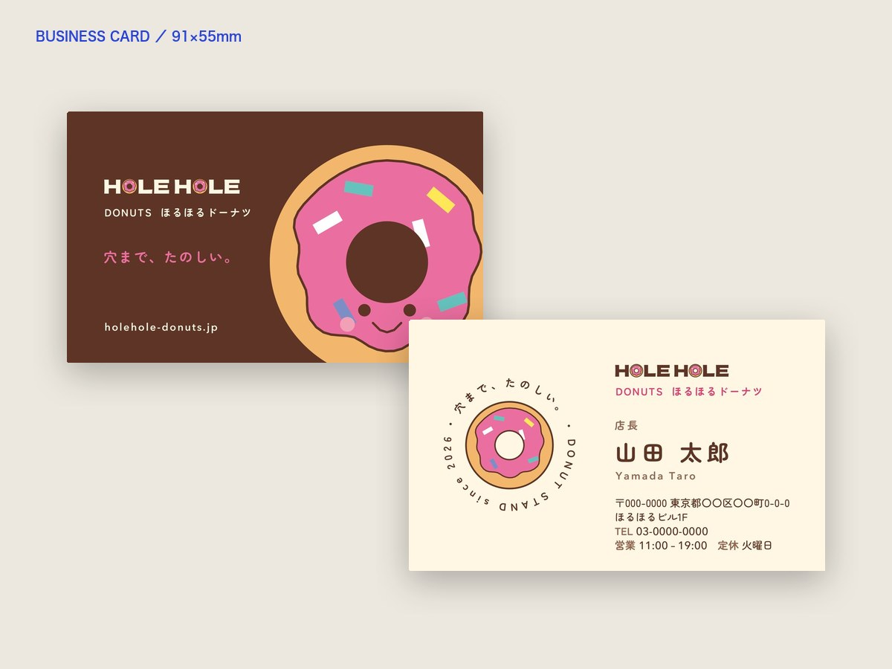

2026年12月31日まで｜毎月10社さま限定
実績づくりモニターを
実績づくりモニターを
募集しています
Biz Studio（ビズ・スタジオ）は、Webサイト・会社紹介資料・名刺を、同じ色と書体でそろえて制作するチームです。実績づくりのため、モニター特別価格で制作をお引き受けします。
デザイン案の確認までは無料。気に入った場合だけ、ご依頼ください。

※架空の会社を想定して制作した見本です
FREE DESIGN
デザイン案の確認までは
デザイン案の確認までは
無料です
まず、デザイン案をお届け
ご応募の内容をもとにデザイン案を1案お作りし、確認用の画像かプレビューでお見せします。ここまで費用はかかりません。
気に入ったら、ご依頼
クラウドワークスで契約・仮払いをしてご依頼ください。仮払いの完了後に、本制作を始めます。
気に入らなければ、それで終わり
ご依頼いただかなくても、費用はかかりません。デザイン案はご確認用のため、データはお渡ししません。
| 名刺・ショップカード | 表裏のデザイン 1案 |
|---|---|
| 会社紹介・営業資料 | 表紙と中2ページ |
| Webサイト・LP | トップページ全体（パソコン・スマホ）1案 |
| サイト＋資料＋名刺 | 上のそれぞれを 1案ずつ |
| 記事 | 構成案と、冒頭の600字ほど |
| 業務マニュアル | 目次と2ページ分 |
| GASでの自動化 | 処理の流れ図と、画面のイメージ |
無料のデザイン案は1社さま1回・1案です。デザイン案への修正は、ご依頼のあとに承ります（修正は2回まで無料）。
PRICE
モニター特別価格
名刺デザイン（1名分）
5,600円
横型・縦型の両方、両面、入稿データつき
ショップカード
5,600円
名刺サイズのお店のカード
会社紹介・営業資料
21,000円〜
10ページ前後。PowerPoint・PDF
1ページのWebサイト・LP
50,000円〜
WordPress・スマホ対応・お問い合わせフォーム
コーポレートサイト
70,000円〜
5ページ前後。お知らせ機能・説明書つき
サイト＋資料＋名刺
91,000円〜
ひとつのデザインでブランド一式
記事（3,000字前後）
3,150円〜
構成づくり・事実確認つき
業務マニュアル・GAS自動化
14,000円〜
手順書づくり、スプレッドシートの自動化
モニター特別価格は、2026年12月31日（木）までのご応募が対象です。価格はすべて税込です。内容や量によってお見積りが変わる場合は、事前にお伝えします。修正は2回まで無料です。
WORKS
Webサイト（WordPress） 会社紹介資料（PowerPoint） 名刺（横型・縦型）
制作の見本



※いずれも架空の会社・お店を想定して制作した見本です。ほかの見本は ポートフォリオ でご覧いただけます。
FLOW
モニターの流れ
- 応募フォームから応募1〜2分で入力できます。
- 内容を確認して、2営業日以内にメールでご案内毎月10社さままで、先着順にご案内します。デザイン案づくりに使う内容（ロゴ・載せたい文章・写真など）をうかがいます。
- デザイン案を無料でお届け1週間ほどで、確認用の画像かプレビューでお見せします。ここまで費用はかかりません。
- 気に入ったら、クラウドワークスでご依頼会員登録は無料です。契約・仮払いの完了後に本制作を始めます。お支払いは仮払いで守られます。気に入らなければ、ご依頼は不要です。
- 制作・納品・ご感想修正は2回まで無料です。編集用データと説明書をお渡しします。納品後、クラウドワークスで率直な評価をお願いしています。
TERMS
モニターの条件
| 対象 | 法人・個人事業主・開業準備中の方（事業で使う制作物） |
|---|---|
| 期間 | 2026年12月31日（木）までのご応募が対象です。デザイン案のお届けから2週間以内のご依頼まで、モニター特別価格でお受けします。2027年1月以降は、モニター特別価格での募集はありません |
| 枠 | 毎月10社さままで |
| デザイン案 | デザイン案の確認までは無料です（1社さま1回・1案）。確認用の画像かプレビューでお見せし、データはお渡ししません |
| ご依頼・お支払い | デザイン案が気に入った場合だけ、クラウドワークスからご依頼ください（仮払い）。仮払いの完了後に本制作を始めます。ご依頼がなければ費用はかかりません |
| お願いしたいこと | 納品後、クラウドワークスでの評価（内容は率直なご感想で構いません） |
| 制作事例の掲載 | 任意です。掲載するのは、ご了承いただいた場合だけです |
| 制作体制 | 専任の制作チームが担当します。構成のたたき台などにAIを活用し、仕上がりはすべて人が確認します |
FAQ
よくある質問
- 個人事業主でも申し込めますか？
- はい。開業準備中の方も歓迎です。
- デザイン案を見てから、依頼しないこともできますか？
- はい。気に入らなければ、ご依頼いただかなくて構いません。費用はかかりません。デザイン案はご確認用のため、データはお渡ししません。
- モニター特別価格はいつまでですか？
- 2026年12月31日（木）までのご応募が対象です（毎月10社さままで）。2027年1月以降は、モニター特別価格での募集はありません。
- なぜクラウドワークス経由なのですか？
- お支払いが仮払いで守られ、やり取りや評価も記録に残るためです。会員登録は無料です。
- 評価は必ず良くしないといけませんか？
- いいえ。率直なご感想をお願いしています。評価の内容が、価格や制作に影響することはありません。
- 作った作品は公開されますか？
- 制作事例として掲載するのは、ご了承いただいた場合だけです。
- どのくらいで完成しますか？
- デザイン案は、ご案内から1週間ほどでお届けします。ご依頼のあと、名刺は1週間ほど、資料は2〜3週間、Webサイトは3〜4週間が目安です。内容によって変わります。